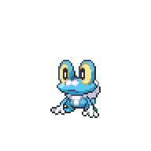

You find yourself on a pier with the Talonflame. After a short conversation with the Talonflame's owner, Tesla, head up north to enter Gearen City. Clear your documents with the receptionist, and enter the city limits proper.

Now that you are in Gearen City, head over to Gearen Lab up north. Inside the lab, you'll meet up with Amanda. She'll head on in first, and you can explore the lab a little before following. Importantly, you can buy items on the right. Another thing you can change is the cinematic, which you can change by talking to this dude.
Another thing you can change is the cinematic, which you can change by talking to this dude. He can add or remove the black bars across the top and bottom of your screen whenever there is a cutscene. It's up to your personal preference. With that done, go on deeper into the lab and talk to Amanda.
He can add or remove the black bars across the top and bottom of your screen whenever there is a cutscene. It's up to your personal preference. With that done, go on deeper into the lab and talk to Amanda.

Amanda will introduce you to Jan, the co-runner of the Aevium League. The two of you then head on deeper into the lab, where, after bumping into a blond haired girl, you are introduced to Professor Jenner. The Professor had just wrapped up an video call, and Amanda then lets you choose your starter. You have the options of every starter from every generation.
| Grass | Fire | Water |
|---|---|---|
|
Bulbasaur
Bulbausaur and its evolutions boasts good bulk, a wide supportive and offensive movepool, and a massive range of type resistances. These factors allow it be able to find a spot on multiple styles of teams. Bulbasaur, and particularly Ivysaur, does relatively well into the first few gyms compared to other grass types. The evolution line can struggle later in the game where large amounts of its jobs can be done by more specialized Pokemon, but if you are looking for a grass type to start out with, Bulbasaur is a perfectly serviceable choice.
|
Charmander
Charmader and its evolutions are still offensive powerhouses in this game. Boasting immense amounts of Special Attack and a good offensive movepool, Charizard in the mid to late game serves as a high damage threat. It does, however, carry on the same weaknesses that it always had. Its typing means that it is particularly weak to Rock types, as well as other common types such as Water and Electric, and its speed can also be lackluster compared to other late-game threats. If you are willing to cover for Charizard's weaknesses, then Charmader is a great offensive Pokemon to build around.
|
Squirtle
Squirtle unfortunately remains the odd one out in this Kanto trio. While its evolution line does boast the highest bulk of the three, its typing means it doesn't have many resistances compared to Bulbasaur and its evolutions. It also has much less offensive power and speed than the other two starters. It does have supportive options for moves, and can be bulky against the right opponents, but those situtations are few and far between. Overall, despite how it pains me to say this, picking Squirtle as a starter isn't recommended if you're new to the game.
|
|
Chikorita
Poor, poor Chikorita and its evolution lines. It's no secret that Chikorita and its evolutions are not the most impressive of the starters. Let's start with the positives. Meganium has a fairly large supportive movepool that can heal or defend its teammates. Unfortuately, that's where the positives end. Meganium has mediocre bulk, offensive power, and speed. Combined that with a pure Grass typing does not give it many resistances to be a wall. Having said that, in the late game there are items that help Meganium function much better as a defender, but by that point you will be able to catch a Chikorita of your own. It also struggles against a lot of the early gyms. If you're looking for a challenge run, Chikorita's your pick.
|
Cyndaquil
Cyndaquil and its evolutions are the special attacking powerhouses of the Johto trio. Cyndaquil's evolutions can definitely break through a large amount of the opponents Pokemon, especially given the right opportunities. Cyndaquil itself, on the other hand, might struggle in the early game. While it would love to have strong fire-type Special Attacks, it is stuck with Ember until it evolves into a Typhlosion, baring any TMs taught. It does have some coverage moves, but a lot of those moves are Physical rather than Special. If you want a late game Fire-type powerhouse though, Typhlosion can burn holes in the opponenets team.
|
Totodile
Totodile and its evolutions are the physical damage dealers of the trio. It boasts a very high Attack stat, and also has a wide array of physical moves to back it up. Like Cyndaquil, however, it does struggle in the early game as there are not many physical water moves that can be learned naturally. Unlike Cyndaquil, it does naturally learn a wide array of coverage moves naturally, so that does help its ability to function in the early game. Totodile and its evolutions are slow, but they are also bulky enough to tank a neutral hit or two. Overall, Totodile is a solid option if you are able to find Pokemon to help it through its early stages.
|
|
Treeko
Treeko is one of the fastest starters overall, and it also has high Special Attack to back that speed up. Additionally, it also learns its strongest moves very early on, getting Giga Drain as early as level 21 (But most likely level 25 as a Grovyle). With a possible hidden ability in Unburden, it can easily outspeed and deal big damage to anything that doesn't resist grass. It's coverage movepool is unfortunately lacking though, so it won't be able to hit most Pokemon that resist Grass as hard. Like most offense-based Pokemon, it is also very frail, and struggles against the typing of the first gym. However, it is a very strong mid-game powerhouse if you can cover the types Treeko struggles against.
|
Torchic
When discussing Torchic, it bears to keep in mind that with its hidden ability Speed Boost, Blaziken is considered one of the best sweepers in the whole franchise. With that in mind, Torchic is one of the best overall starters to pick, as it can hold its own for most of, if not all of, the game. It's fast, hits incredible hard on both with physical and special attacks, and has a wide coverage movepool to take advantage of. Torchic, as long as you soft reset for its hidden ability, is probably the easiest starter to use if you're new to the game.
|
Mudkip
Mudkip is the slowest of the Hoenn starters, but has the bulk to compensate for that speed. It's typing also leaves it with a single weakness, albeit a 4x weakness to grass, and multiple resistances. It also has a very high Attack stat, and a large natural and TM movepool that can it can pick and choose from. It also has the advantage against the first gym, and is neutral against the rest of the first half of the gym. As long as you account for its speed and Grass type weakness, Mudkip is a very solid choice for a starter.
|
|
Turtwig
Turtwig is the physical tank of the Sinnoh starters. That isn't to say there's no offensive power, Torterra boasts the highest Attack stat of the three. However, Turtwig and its evolution line are very, very slow. Turtwig is also very vulnerable in the early levels, as it does not have many moves that deal damage. Combined that with a weakness to the first gym, and the struggle is real in the early game. However, once it evolves, Grotle and Torterra are much more self-sufficient, and can provide its team with a slow, but powerful, damage threat.
|
Chimchar
Chimchar and its evolutions are fast and are blessed with equally high Attack and Special Attack stats. Combine the stats with a decent natural movepool and a huge TM movepool and Chimchar is one of the most flexible starters that you can pick. It is relatively frail, and can go down fast to moves that are super effective against it. Like Blaziken, soft resetting for the hidden ability Iron Fist is useful, and since Infernape is naturally faster than Blaziken, it is happy with the power boost to its punching moves. Chimchar is a solid choice if you want a starter that you can swap roles around as needed.
|
Piplup
Piplup complements Turtwig in being a Special-oriented tank of this generation, having the highest Special Attack and Special Defense of the three. Like Turtwig, it is also incredibly slow. Piplup's final evolution, Empoleon, gains a Steel type, which gives it a total of 10 type resistances. This makes Empoleon a relatively easy Pokemon to throw into battle while you heal up your other Pokemon. However, its movepool leaves much to be desired. Despite its high Special Attack stat, most of its available TMs are physical, and its natural movepool doesn't complement it much either. If you need a tank that resists a lot of types, and can dish out some damage, then Piplup is a serviceable starter for you.
|
|
Snivy
Without its hidden ability, Snivy is a starter that doesn't differentiate itself much from its grass type peers. It's stats make it a fast Meganium, bulky with middling offense stats. It also has a very, very poor movepool for coverage, learning only a handful of usable moves. Like most of its grass type compatriots, it struggles against the first gym. However, if you soft reset for its hidden ability, Snivy becomes a very power one-trick snake in the late game. Contrary lets it span Leaf Storm to raise its Special Attack to incredible levels, and its natural bulk and speed allows it to survive to be a massive threat. It will get walled by anything that resists Grass, but if its a one-trick snake you need, then Snivy's your starter. It'll just take some time for it to get there.
|
Tepig
Tepig and its evolutions round out the three Fire/Fighting squad as the slow, powerful Physical attacker. It's noticeably slower than Chimchar or Torchic, but it does have more HP than the two. Unfortunately, that bulk does not spread to its Defense or Special Defense. Despite that, it does have a wide natural movepool to help it through the game, and also has a wide array of usable TMs. If needed, it can even utilize some Special moves as its Special Attack is not much lower than its Attack stat. It is less bulky than its HP pool would make it seem, so be careful when using this starter.
|
Oshawott
Oshawott is the middle child of the Unova region, with all of its stats being in the middle of the other two starters. Once it evolves, it does claim the title of having the highest Special Attack stat, but most of its movepool is physical. It also doesn't stand out much compared to its more specialized Water type starters such as Totodile, Froakie, or Popplio. That being said, Oshawott can carry itself very well throughout the early game compared to most other starters, with it learning learning powerful moves early on into the game. Oshawott should definitely be considered if you need a Water type to take you through the early stages of the game.
|
|
Chespin
Chespin is another Grass type starter that is a physical tank. Unfortunately, its final typing as Chesnaught does more harm than good, as it gains more weaknesses than resistances. Due to its slowness, it'll often have to take hits before hitting back hard, but when Chespin and its evolutions do damage the damage does hit hard. Chesnaught also has a very, very large movepool to use, capable of hitting pretty much any Pokemon supereffectively. It also has moves that allow it to heal up its taken damage, such as Drain Punch. Due to its low Special Defense, you need to be careful with who you're up against, as a wrong move can lead to Chesnaught being taken down. Choosing Chespin as a starter can be a challenge, especially for the first gym, but if you're up for it then it's definitely useable.
|
Fennekin
Fennekin, and later Delphox, are the special stat masters of this generation. It has amazing Special Attack and Speed, with respectable Special Defense. While Fennekin doesn't learn strong Fire type moves until it evolves into a Delphox, it does learn Psychic type moves in the mid-game and can learn a lot of the early TMs. Once it evolves into Braixen, the combination of Fire and Psychic means very few Pokemon will resist both types. For those that do resist both types, however, Delphox does not have the coverage needed to take care of those Pokemon. Fennekin is a neutral to strong starter against the first two gyms, so picking Fennekin does make the early game more bearable if you're still learning.
|
Froakie
Froakie follows in Fennekin's footsteps as a speedy Special Attacker. It does also have respectable Attack, but its bulk is very much lackluster. Froakie and its evolution carries the hidden ability Protean, which allows it to change types, making it one of the most versatile Pokemon in the game. However, this means that using Froakie requires a level of forethought, and eventhough Greninja's movepool is immense, there are only four slots available. Froakie definitely carries its own weight well into the late game, so as long as you're willing to put thought into your movesets, Froakie is a very solid option for a starter.
|
|
Rowlet
Rowlet is an offense-oriented Pokemon that unfortunately lacks the speed to do its job well. It has very high Attack and Special Attack, which makes it versatile, but it has a much lower Speed than you would expect. For the early game, Rowlet can carry its own weight just fine, but by mid-game the threats it faces are capable of knocking it out faster than it can retaliate. To make matters worse, it also suffers from a lack of coverage moves. All this together means that Rowlet, and by extension Decidueye, fulfills a very specific niche that most teams don't need. But if you do need a Ghost/Grass type to take care of your problems, Rowlet's your starter. Just know that you can catch Rowlet by the time midgame comes around.
|
Litten
Litten is a starter that separates itself into the early game and the late game stages. In the early game, Little and its first evolution, Torracat, are fast, Physical sweepers that can quickly tear through Pokemon weak to Fire. It learns Fire Fang very early on, making it a force to be reckoned with. It is incredibly frail though, so think twice before sending it out to tank a move, even if its not very effective. Once Torracat evolves into Incineroar, however, it loses a lot of its speed and gains a lot of bulk instead. In the late game, Inceneroar, especially if it has Intimidate, functions as a tank that can dish out massive amounts of damage while lowering the oppoenent's Attack stat. As long as you're comfortable with the style change once it reaches its final evolution, Litten is a very strong starter to use, especially in the early to mid game.
|
Popplio
Popplio's final evolution, Primarina, has the honor of being the first Fiary type starter. Like the final evolutions in Alola, Popplio's speed is on the slower side, but makes up for it by having a lot of Special Defense, and an even larger Special Attack. If you're able to get it's hidden ability, Liquid Voice, by midgame Brionne and Primarina can become a strong, versatile Special Attacker. In the early game, Popplio does suffer a little from lack of powerful moves, but it does learn a lot of coverage naturally. It also can learn a lot of early TMs, which are boosted by its hidden ability. It's Fairy typing also complements it defensively, giving it an immunity to Dragon types. Overall, Popplio is a very solid starter who can function at all stages in the game.
|
|
Grookey
I've never used Grookey so Idk
|
Scorbunny
Never used Scorbunny either
|
Sobble
Sobble has one of the highest combined Special Attack plus Speed as the first evolution. The cost for that, of course, is its defenses. Despite that, Sobble carries itself well in the early game, as it learns powerful STAB moves pretty early. Its effective does drop in the midgame, where most of its naturally learned moves are Physical rather than Special, but once it evolves into Intelleon it learns its powerful signature move, Snipe Shot. Intelleon does suffer from a lack of coverage move, so be sure to support it appropriately should you choose Sobble as a starter.
|
If you don't really care which starter you pick, you can get a random one from the rainbow machine to the right.
 You can also save and reload to get the Nature/IVs/Shiny if you so choose. After you choose your starter, head back and talk to Amanda. She'll congratulate you on your first Pokemon, and proceed to challenge you to a battle.
You can also save and reload to get the Nature/IVs/Shiny if you so choose. After you choose your starter, head back and talk to Amanda. She'll congratulate you on your first Pokemon, and proceed to challenge you to a battle.
|
Litten, Level 5 |
Fire | Scratch |
|---|---|---|
| Growl | ||
| --- | ||
| --- | ||
Reward:  35 35
|
||
Regardless of whether or not you defeat her, she will heal up your Pokemon for you. She'll also give you some Pokeballs and Running Shoes. You can toggle the Running Shoes by the S key or hold Spacebar. Amanda will then take her leave, leaving you alone with the Professor. He will start to ask you to help with a request, but before he can elaborate, a black-haired trainer walks into the lab. The trainer introduces himself as Ren, one of the Professor's assistant. Upon learning that you are a new trainer, he challenges you to a battle.
|

Froakie, Level 5 |
Water | Pound |
|---|---|---|
| Growl | ||
| --- | ||
| --- | ||
|
Reward: 35
|
||
Win or lose, Ren will take his leave. Professor Jenner will finally give you his request, which is to meet up with his daughter Melia, who should be heading to Goldenwood Forest. He gives you a Pokedex and a Cybernav as forward payment. The PokeDex functions the same way it always has; the Cybernav let's you change the music and view the town map. With nothing else left to do, head on out of the lab.


Before you get too far, you run into Jan again. He takes you to the backrooms to show you a few useful devices that you can interact with. The green star allows you to access your Pokemon box, the red star functions as a single use Pokemon Center, and the golden star is a permanent Pokemon Center, and finally, a holographic module that gives you tips about the upcoming gym. With that, you are finally free to explore East Gearen City.
<< Prologue East Gearen City >>
Oceana Pier

East Gearen City (Left)

Gearen Lab Mart
| Item | Price |
| Potion | 300 |
| Antidote | 100 |
| Poke Ball | 200 |